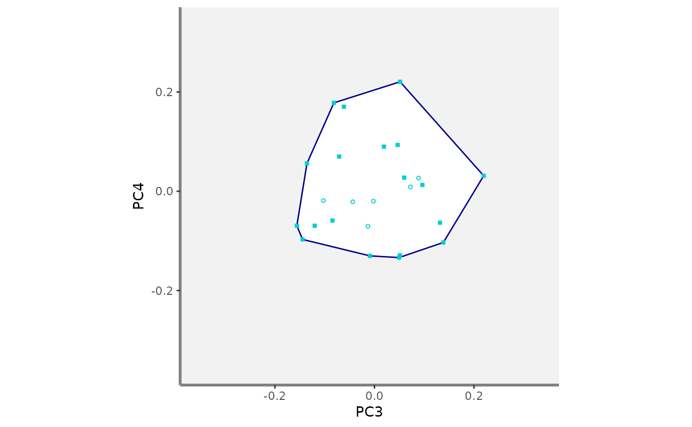
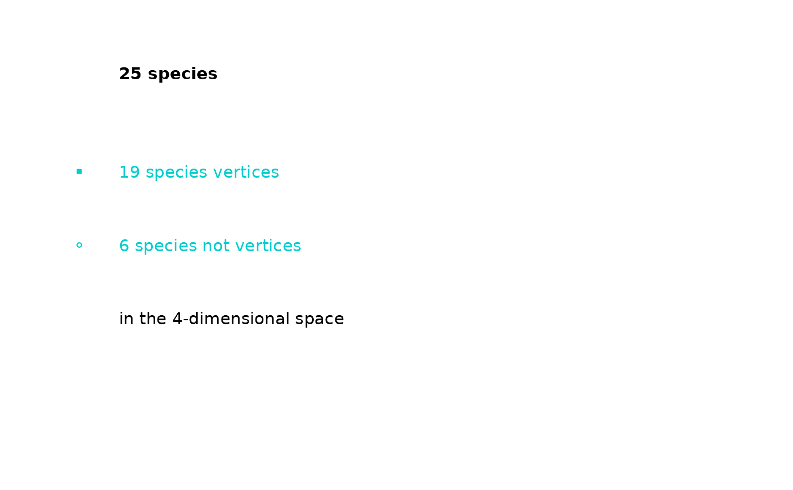

This function illustrates the position of species along pairs of axes of a functional space
funct.space.plot(
sp_faxes_coord,
faxes = NULL,
name_file = NULL,
faxes_nm = NULL,
range_faxes = c(NA, NA),
color_bg = "grey95",
color_pool = "darkturquoise",
fill_pool = "white",
shape_pool = 21,
size_pool = 1,
plot_ch = TRUE,
color_ch = "darkblue",
fill_ch = "white",
alpha_ch = 1,
plot_vertices = TRUE,
color_vert = "darkturquoise",
fill_vert = "darkturquoise",
shape_vert = 22,
size_vert = 1,
plot_sp_nm = NULL,
nm_size = 3,
nm_color = "black",
nm_fontface = "plain",
check_input = TRUE
)a matrix of species coordinates in a
multidimensional functional space. Species coordinates have been retrieved
thanks to tr.cont.fspace or quality.fspaces.
a vector with names of axes to plot (as columns names in
sp_faxes_coord). You can only plot from 2 to 4 axes for
graphical reasons. Default: faxes = NULL (the four first axes will be
plotted).
a character string with name of file to save the
figure (without extension). Default: name_file = NULL which means plot
is displayed.
a vector with axes labels for figure. Default: as
faxes).
a vector with minimum and maximum values of axes
used for all plots to have a fair representation of position of species.
Default: range_faxes = c(NA, NA) (the range is computed
according to the range of values among all axes). If at least one of the
value provided is within the range of coordinates, then convex hull could
not be plotted so plot_ch should be FALSE.
a R color name or an hexadecimal code used to fill plot
background. Default: color_bg = "grey95".
a R color name or an hexadecimal code referring to the
color of symbol for species. Default: color_pool = 'darkgreen'.
a R color name or an hexadecimal code referring to the
color to fill species symbol (if shape_pool >20). Default:
fill_pool = 'white'.
a numeric value referring to the shape of symbol used for
species. Default: shape_pool = 21 (filled circle).
a numeric value referring to the size of symbol for
species. Default: size_pool = 1.
a logical value indicating whether the convex hull shaping
the pool of species should be illustrated. If plot_ch = TRUE, convex
hull of all species in the multidimensional space described in
sp_faxes_coord is computed and its projection in 2D spaces are
drawn as polygons. Default: plot_ch = TRUE.
a R color name or an hexadecimal code referring to the
border of the convex hull filled by the pool of species. Default:
color_ch = "darkblue".
a R color name or an hexadecimal code referring to the
filling of the convex hull filled by the pool of species. Default:
fill_ch = "white".
a numeric value for transparency of the filling of the
convex hull (0 = high transparency, 1 = no transparency). Default:
alpha_ch = 1.
a logical value defining whether vertices of the convex
hull shaping the pool of species should be illustrated. If
plot_vertices = TRUE, vertices of convex hull computed in the
multidimensional space from sp_faxes_coord and are plotted with
aesthetics listed below '..._vert' (species not being vertices are plotted
with aesthetics described above for '.._sp'. Default:
plot_vertices = TRUE.
a character value referring to the color of symbol for
vertices if plot_vertices = TRUE.
Default: color_vert = 'darkturquoise'.
a character value referring to the color for filling symbol
for vertices (if shape_vert >20). Default:
fill_vert = 'darkturquoise'.
a numeric value referring to the symbol used to show
vertices position if plot_vertices = TRUE. Default: shape_vert = 23
(filled diamond).
a numeric value referring to the size of symbol for
vertices Default: size_vert = 1.
a vector containing species names that are to be printed
near their position. Default: plot_nm_sp = NULL (no name plotted).
a numeric value for size of species label. Default is 3
(in points).
a R color name or an hexadecimal code referring to the color
of species label. Default: nm_color = 'black'.
a character string for font of species labels (e.g.
"italic", "bold"). Default: nm_fontface = 'plain'.
a logical value indicating whether key features the
inputs are checked (e.g. class and/or mode of objects, names of rows
and/or columns, missing values). If an error is detected, a detailed
message is returned. Default: check_input = TRUE.
If name_file is NULL, a list containing ggplot2
objects is returned: plots of functional space along all pairs of axes
(named according to axes names, e.g. "PC1_PC2"), figure 'caption', and the
full figure 'patchwork' built using the library patchwork.
If name_file is not NULL a 300dpi png file
is saved in the working directory. Ranges of axes are the same for all
panels and if required projection of the convex hull computed in the
multidimensional space provided as input sp_faxes_coord is
illustrated with a polygon. Species being vertices of this convex hull are
shown with aesthetics provided as inputs ..._vert. Labels for
species listed in plot_sp_nm are added with if required arrows
using ggrepel. Summary about species and dimensionality are printed
on top-right corner of the figure.
# Load Species*Traits dataframe:
data("fruits_traits", package = "mFD")
# Load Assemblages*Species dataframe:
data("baskets_fruits_weights", package = "mFD")
# Load Traits categories dataframe:
data("fruits_traits_cat", package = "mFD")
# Compute functional distance
sp_dist_fruits <- mFD::funct.dist(sp_tr = fruits_traits,
tr_cat = fruits_traits_cat,
metric = "gower",
scale_euclid = "scale_center",
ordinal_var = "classic",
weight_type = "equal",
stop_if_NA = TRUE)
#> [1] "Running w.type=equal on groups=c(Size)"
#> [1] "Running w.type=equal on groups=c(Plant)"
#> [1] "Running w.type=equal on groups=c(Climate)"
#> [1] "Running w.type=equal on groups=c(Seed)"
#> [1] "Running w.type=equal on groups=c(Sugar)"
#> [1] "Running w.type=equal on groups=c(Use,Use,Use)"
# Compute functional spaces quality to retrieve species coordinates matrix:
fspaces_quality_fruits <- mFD::quality.fspaces(
sp_dist = sp_dist_fruits,
maxdim_pcoa = 10,
deviation_weighting = "absolute",
fdist_scaling = FALSE,
fdendro = "average")
# Retrieve species coordinates matrix:
sp_faxes_coord_fruits <- fspaces_quality_fruits$details_fspaces$sp_pc_coord
# Plot functional spaces:
mFD::funct.space.plot(
sp_faxes_coord = sp_faxes_coord_fruits[, c("PC1", "PC2", "PC3", "PC4")],
faxes = NULL,
name_file = NULL,
faxes_nm = NULL,
range_faxes = c(NA, NA),
color_bg = "grey95",
color_pool = "darkturquoise",
fill_pool = "white",
shape_pool = 21,
size_pool = 1,
plot_ch = TRUE,
color_ch = "darkblue",
fill_ch = "white",
alpha_ch = 1,
plot_vertices = TRUE,
color_vert = "darkturquoise",
fill_vert = "darkturquoise",
shape_vert = 22,
size_vert = 1,
plot_sp_nm = NULL,
nm_size = 3,
nm_color = "black",
nm_fontface = "plain",
check_input = TRUE)
#> $PC1_PC2
#>
#> $PC1_PC3
#>
#> $PC1_PC4
#>
#> $PC2_PC3
#>
#> $PC2_PC4
#>
#> $PC3_PC4

#>
#> $caption

#>
#> $patchwork
#>